Se llama gantry al cuerpo en forma de donut con
un orificio central, en cuyo interior se introduce
la mesa de exploración con el paciente. Es un
conjunto electromecánico en el que se encuentran
alojados el tubo de rayos X, los detectores,
el generador de alta tensión, el sistema de refrigeración,
el sistema de adquisición de datos (DAS).
y los colimadores.
Sala de Mando
Sala en la cual se trabajan las imagenes adquiridas del
tomográfo, formando las reconstrucciones de los volumenes
de imagenes del paciente. Por lo general en estas salas se
encuentran las consolas de mando y ordenadores.
Nombre del componente
Definición
Tubo de rayos-X
El tubo de Rayos x de ánodo giratorio, generalmente es de tungsteno, el cual posee una alta capacidad de dispersión de temperatura a diferencia de del tubo de Radiografía.
Sistema de adquisición de datos (DAS)
Con cada barrido, el sistema de adquisición de datos (DAS) transforma las señales procedentes de los detectores en datos digitales, y las transmite al ordenador.
Colimadores Pre-Paciente
Este colimador limita el área del paciente que intercepta el haz útil y,por tanto, determina la dosis para el paciente. Además de dejarlo casi paralelo a los detectores
Colimadores Pre-Detector
Este colimador restringe el haz de RAYOS-X visto desde el conjunto de detectores. Este colimador reduce la ridiación dispersa incidente con el conjunto de detectores y, calibrados con el prepaciente, define el grosor de sección
Banano de Detectores
Los sistemas de TC helicoidal multicorte tienen múltiples detectores ordenados de forma que los números llegan a decenas de miles. Antes se usaban detectores llenos de gas, pero ahora todos son detectores en estado sólido de centelleo, que se basan principalmente en cristales-fotodiodode centelleo.
Sistema de anillos deslizantes
Los anillos deslizantes son dispositivos electromecánicos que conducen la electricidad y las señales eléctricas a través de anillos y cepillos de una superficie rotatoria a una superficie fija. La TC helicoidal es posible gracias al uso de la tecnología anillo deslizante, que permite que el cabezal rote continuamente, sin interrupción.
Generador de alta tensión
Todos los escáneres de TC funcionan con alimentación trifásica o de alta frecuencia, por lo que admiten velocidades superiores del rotor del tubo de rayos X y los picos de potencia característicos de los sistemas pulsátiles.
Sistema de enfriamiento
Los escáneres de TC utilizan un tubo de rayos X que se calienta bastante rápido y requiere entre 10 y 30 minutos de tiempo de enfriamiento. El tiempo de enfriamiento retrasa la atención al paciente y puede aumentar los costos médicos. Los enfriadores médicos eliminan el tiempo de enfriamiento que requieren los escáneres CT y permiten que las instalaciones ofrezcan a los pacientes una atención más rápida (y mejor). Existen 2 tipos de enfriadores, externos e internos.
Movilidad de la camilla
La camilla mantiene al paciente en una posición cómoda y está construida con un material de bajo número atómico, como por ejemplo fibra de carbono. Dispone de un motor que la mueve con suavidad y precisión para lograr una posición exacta durante el examen, en particular en técnicas de TC helicoidal.
Ordenador
La TC sería imposible si no se dispusiera de un ordenador digital ultrarrápido. Se requiere resolver a la vez del orden de 30.000 ecuaciones; por tanto, es preciso disponer de un ordenador de gran capacidad. Con todos estos cálculos matemáticos el ordenador reconstruye la imagen.
Consola de Mando
Numerosos escáneres de TC disponen de dos consolas, una para el técnico que dirige el funcionamiento del equipo y realiza reconstrucciones apropiadas a cada estudio, y otra para el radiólogo que consulta las imágenes y manipula su contraste, tamaño y condiciones generales de presentación visual. La consola del operador contiene los dispositivos de medida y control para facilitar la selección de los factores técnicos radiográficos adecuados, el movimiento mecánico del gantry y la camilla del paciente, así como para activar la reconstrucción y transferencia de la imagen. La consola de visualización del médico muestra la imagen reconstruida desde la consola del operador y la visualiza con vistas a obtener el diagnóstico adecuado.
Almacenamiento de datos
Hay varios formatos útiles en el campo de la radiología, siendo el más utilizado el formato DICOM. Los escáneres actuales almacenan los datos de las imágenes en discos duros del ordenador y son enviados al sistema de archivo digitalizado, también llamado PACS.
Conceptos y Parámetros
Campo de Visión
Es el tamaño del área en estudio con el campo de
visión determina el diámetro del corte.
Matriz
Se refiere al conjunto de celdas colocadas en fila y/o columnas y sus dimensiones son variables dependiendo de cada equipo. A cada celda le corresponde un punto fijo de la imagen. El número que hay en el interior de la celda corresponde el brillo o intensidad en ese punto.
Píxel
En el momento en la cual se forma la imagen en la matriz, cada una de las celdas que la componen se denomina píxel que corresponde a la representación en forma bidimensional del volumen del tejido.
Voxel
Unidad cúbica que compone un objeto tridimensional. Constituye la unidad mínima procesable de una matriz tridimensional y es el equivalente del píxel en un objeto 2D. En TC corresponde al volumen del tejido que se define según el tamaño del píxel multiplicándolo por el grosor de la sección estudiada por el barrido.
Unidades Hounsfield
Es una escala que representa la capacidad que tiene cada parte del paciente para atenuar la radiación. Valor del – 1000(aire)al 1000(metal),0 es el agua. Toda esta escala se puede observar en un monitor otorgándole un tono de gris diferente, sin embargo el ojo humano solo puede distinguir 20 tonos de gris por lo que debemos variarla escala para poder visualizar solo ciertas partes.
Ventana
Se refiere a la gama dedensidades cuyos números Hounsfield referidos a los tejidos del cuerpo humano,van desde el -1000 hasta el +1000 pasando por el 0 que es el que corresponde a la densidad del Agua, tomada como referencia. Pueden variar en función del aparato.
Intervalo
Determina la distancia entre un corte y otro. Es posible dejar una gran distancia entre un corte y otro lo que nos dejaría zonas sin posibilidad estudiar, pero también se pueden hacer cortes continuos.El intervalo está relacionado con el movimiento de la mesa.
Grosor del corte
Determina el volumen del Voxel o lo que es lo mismo que la anchura del corte(anchura de la"rebanada":slicewidth).Se mide en mm.
Kv y mA
Son las características del disparo, como cualquier aparato convencional, con la salvedad de que prácticamente el aparato ya tiene establecidas de forma protocolizada para cada tipo de exploración, aunque se puede variara manualmente.
Tiempo
El tiempo del disparo corresponde al tiempo del barrido. Entre disparo y disparo existe un tiempo de espera que corresponde al tiempo de enfriamiento y este esta relacionado con la capacidad de enfriamiento del tubo y con la técnica utilizada.
Scout View o Escanograma
Es una técnica por la cual se hacen múltiples rayos-X del cuerpo de diferentes ángulos en un periodo de tiempo muy corto.
Canales de detectores
Existen canaleso detectores de 2 - 4 - 8 - 16 - 20 - 32 - 64 - 128 y hasta 256, este último es el más actual, pero no muchos centros los tienen.
Volumen Parcial
El efecto del volumen parcial se produce cuando dos áreas de diferente atenuación están incluidas en el mismo vóxel, lo que hace que el número de TC del píxel sea incorrecto, enmascarándose los coeficientes de atenuación de cada una de esas estructuras.
Ruido del sistema
La resolución de contraste del sistema no es perfecta. La variación de los valores de representación de cada píxel sobre un mismo tejido por encima o por debajo del valor medio se denomina ruido del sistema.
Resolución de contraste
Es la capacidad para distinguir estructuras de diferente densidad. Traduce la exactitud de los valores de absorción de los rayos X por el tejido en cada vóxel o píxel.
Raw Data
Los raw data son números binarios que representan la señal digitalizada recogida por el detector. Conocidos como datos crudos, se pueden usar para realizar cualquier tipo de reconstrucción a posteriori, es decir, una vez que el paciente haya abandonado la sala, eso sí, siempre y cuando estos datos hayan sido guardados.
Image data
Los image data son los valores de píxel calculados a partir de la exploración y son los datos que se utilizan para visualizar y analizar imágenes. También se llaman datos reconstruidos. Es la imagen que se ve en pantalla y que se puede modificar mediante filtros o algoritmos.
Funcionamiento y Obtención de Imagen
Diferencia entre una RX y TC
A diferencia de una radiografía convencional, que utiliza un tubo fijo de
rayos X, un escáner de TC utiliza una fuente motorizada de rayos X que
gira alrededor de la abertura circular de una estructura en forma de
rosca llamada Gantry. Durante un escaneo por TC, el paciente permanece
recostado en una cama que se mueve lentamente a través del Gantry,
mientras que el tubo de rayos X gira alrededor del paciente, disparando
haces angostos de rayos X a través del cuerpo. En lugar de usar película,
los escáneres de TC utilizan detectores digitales especiales de rayos X,
que se localizan directamente frente a la fuente de rayos X. Cuando los
rayos X salen del paciente, son captados por los detectores y transmitidos
a una computadora.
Diseño del Sistema de Obtención de Imágenes
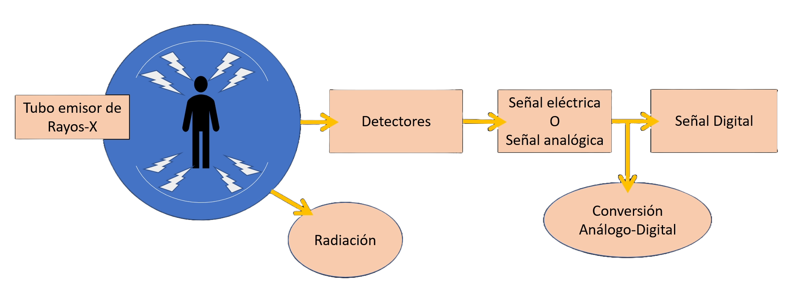
En la tomografía lineal convencional, los Rx realizan un barrido de todo el grosor
del cuerpo, consiguiéndose la imagen deseada por el movimiento conjunto del foco de
Rx y de la placa, que borra y desdibuja los planos inferiores y superiores al plano
deseado. La cantidad de radiación que recibe el paciente en este estudio, es grande y
la nitidez de la imagen se resiente por las imágenes de barrido.
La obtención de imágenes en el equipo de TC viene dada por un tubo emisor de
un haz de Rx que está enfrentado con suma precisión a una columna de detectores.
Ambos, es decir el bloque tubo-detectores, se moverán sincrónicamente para ir
girando siempre enfrentados y de esta forma se obtendrán las distintas proyecciones
del objeto.
Cada detector tendrá un canal por el cual enviará las señales recibidas de cada
uno de los detectores en cada proyección, y a partir de ellas reconstruye la imagen,
pero siempre quedarán archivadas en la memoria del ordenador o en el disco
magnético de donde podrán ser extraídas siempre que se desee.
Por tanto los detectores convierten la señal de radiación en una señal electrónica
de respuesta o “señal analógica” (sí o no, es decir, hay pulso o no hay pulso) que a su
vez se convierte en “señal digital” por medio de una conversión analógico-digital (si
hay señal se obtiene como resultado 1 y si no hay señal el resultado es 0).
Este proceso de conversión lo realiza el computador para poder así trabajar con
las medidas recibidas en un sistema binario, que es el que utilizan los ordenadores.
La imagen reconstruida puede ser almacenada pudiendo visualizarla cada vez
que se desee. También puede ser impresa en una placa convencional a través de una
impresora láser conectada al monitor de visualización.
Formación de Imagen
La forma exacta en la que se produce la imagen en TC es muy complicada y
requiere conocimientos de física, ingeniería e informática. Los principios básicos, no
obstante, pueden explicarse con facilidad si se elige el equipo más simple, compuesto
por un haz de Rx finamente colimado y un único detector.
La fuente de Rx y el detector están conectados de forma que tiene un movimiento
sincrónico. Cuando el conjunto fuente de Rx-detector realiza un barrido o
TRASLACIÓN a través del paciente, las estructuras internas del sujeto atenúan el haz
en función de la densidad y del número atómico de los tejidos de la zona.
La intensidad de radiación se detecta en función de este patrón y se crea un perfil
de intensidades o PROYECCIÓN . Al final de un barrido, el conjunto fuente-detector
gira y comienza un segundo barrido. Durante este barrido, la señal del detector vuelve
a ser proporcional a la atenuación del haz provocada por las estructuras atómicas
internas, y se obtiene una segunda proyección.
Si se repite muchas veces el proceso se obtendrán una gran cantidad de
proyecciones. Esas proyecciones no se visualizan, sino que se almacenan de forma
numérica en el ordenador.
El procesado de los datos que realiza el ordenador supone la superposición
efectiva de cada proyección para RECONSTRUIR la estructura anatómica
correspondiente a ese corte.
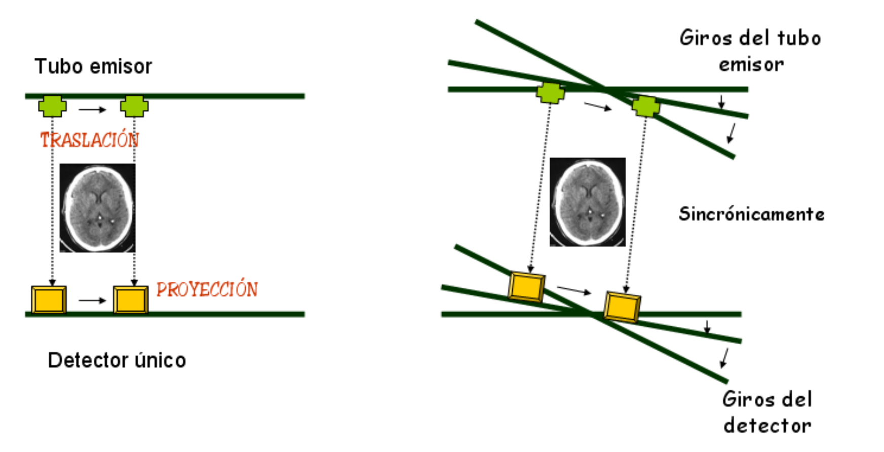
TC Helicoidal
Gracias a los importantes avances del hardware en estos años, se ha logrado un
nuevo método de tomografía computarizada (TC), el TAC helicoidal (TCH), que
aprovecha el giro continuo de detectores y tubo productor de rayos X con el
movimiento continuo de la mesa de estudio. El conjunto de todos estos movimientos
hace que la resultante sea una espiral o hélice. Con esta forma de estudio
conseguimos que el tiempo útil sea el 100%, mejorando considerablemente el tiempo
de exploración
El TC espiral o helicoidal se utiliza desde 1989, siendo un instrumento de
diagnóstico nuevo y de mejores prestaciones que los anteriores. El término “espiral”
hace referencia al movimiento aparente del tubo de rayos X durante el examen.
Con esta técnica es posible obtener mejores imágenes de estructuras anatómicas
implicadas en los movimientos respiratorios, resultando muy adecuada en el estudio
del tórax, abdomen y pelvis, aunque también nos permite obtener imágenes de otras
regiones del cuerpo en las que no existen problemas de movimiento como son la
cabeza, la columna y las extremidades.
La adquisición Helicoidal, implica tener que manejar una gran cantidad de datos,
hecho que fue solucionado con nuevas computadoras, cada vez más rápidas, y con la
utilización de disco duros, también de gran capacidad de almacenamiento. Fue
necesario elaborar nuevos algoritmos de reconstrucción ya que ahora la adquisición,
no se hace con la camilla parada, sino que ésta está en continuo movimiento. Los
algoritmos tienen que ser capaces de reconstruir las imágenes en los distintos planos,
como si la camilla estuviese parada.
TC helicoidal Multicorte
A finales de los años 90, se produce una mejora en la TAC helicoidal surgiendo la
Tomografía Computada Helicoidal Multicorte, donde el tiempo de exploración ya se
había reducido a 0,5 seg. Esta velocidad exponía a los componentes del Gantry a una
fuerza centrífuga equivalente a 13 veces la fuerza que debe realizar el transbordador
espacial en sus vuelos al espacio exterior. Esto hizo que se tuvieran que rediseñar los
generadores de Rayos X (incorporados al Gantry), los Tubos de Rayos X, y las placas
electrónicas que están en la parte móvil. Por otro lado se desarrollaron equipos con
varias matrices de detectores para producir varios cortes al mismo tiempo en que
antes se producía uno solo (los detectores Matriciales permitían la adquisición
simultánea de 4 cortes por giro)
Habiendo llegado a una importante frontera tecnológica (el giro de 0,5 seg. así lo
parecía) era obvio que las mejoras iban a venir por el lado de adquirir más rápido
antes que reducir aun más el tiempo de adquisición. Es cuando comienzan a surgir
equipos que realizan 8 y 16 cortes simultáneos. Y actualmente ya se habla de 32 y 64
cortes por giro. Es obvio que esta tecnología ha revolucionado el diagnóstico por
imagen ya que las ventajas introducidas son enormes.
Inicialmente, estos equipos tenían dos coronas de detectores situadas en
paralelo para adquirir datos simultáneamente durante una sola rotación del sistema de
exploración, dividiéndose el haz de rayos X en dos haces iguales por los colimadores
pre-detectores de cada corona.
Estos sistemas han ido evolucionando rápidamente, de forma que, hoy existen
en el mercado equipos de TAC multicorte que poseen hasta 32 o más coronas de
detectores dispuestas en paralelo. Las coronas de detectores pueden estar diseñadas
con detectores de igual anchura o con detectores de anchura variable (asimétricos) y
un colimador después del paciente que define la anchura del corte.
En estos equipos, la señal de cada detector está conectada a un amplificador
electrónico controlado por el ordenador, llamado sistema de adquisición de datos
(DAS), que selecciona combinaciones de detectores para modificar los grosores de los
cortes.
Algunos equipos de TAC multicorte para compensar la pérdida de resolución
espacial usan colimadores de detectores adicionales, pero tienen el inconveniente de
desaprovechar rayos X, teniendo que aumentar el mA para conseguir la misma
intensidad de señal. Por tanto, aumentará la dosis de radiación al paciente. A estos
equipos se les denomina equipos de TAC multicorte de alta resolución.
Algunos equipos de TAC multicorte para compensar la pérdida de resolución
espacial usan colimadores de detectores adicionales, pero tienen el inconveniente de
desaprovechar rayos X, teniendo que aumentar el mA para conseguir la misma
intensidad de señal. Por tanto, aumentará la dosis de radiación al paciente. A estos
equipos se les denomina equipos de TAC multicorte de alta resolución.
Ventajas
Método no Invasivo
Apnea más corta
Mejor Resolución Espacial
Menor tiempo de exposición
Colimación Flexible
Monitoreo de MC
VR (3D) y MPR
Diagnóstico Precoz
Adquisión helicoidal en tiempo real
Fluoroscopía en tiempo real
AngioTAC
Colonoscopía Virtual
Desventajas
Excesivo volumen de información
No poder tratar a pacientes obesos
Mayor Costo que RX
Altas Dosis de radiacion si no cuenta con CAE
Formas de Adquisión de Imagen
Localizador (topograma o scout)
Es necesario obtener al menos un localizador
en cada estudio sobre el cual se delimitará el FOV,
el grosor de corte, el pitch, la angulación del haz
de rayos X y los demás parámetros. En él debe
estar incluida la totalidad del área anatómica que
se quiera estudiar.
Todos los equipos actuales permiten el control
automático de la exposición durante el estudio.
Se calcula con la adquisición del topograma y
permite modular automáticamente la dosis de
radiación óptima necesaria para cada volumen
del área corporal del paciente, proporcionando
una relación equilibrada entre calidad de imagen
y baja dosis de radiación.
El localizador también permite valorar el correcto
centraje del paciente sobre la mesa y con
respecto al gantry, lo que es esencial para evitar
artefactos o errores de adquisición de datos.
Adquisición secuencial
En la adquisición secuencial, aparte de la colimación
(el grosor de corte), hay que tener en cuenta
otro parámetro esencial para la exploración: el
intervalo del corte.
El intervalo de corte delimita la distancia
existente entre corte y corte, y determina el desplazamiento
de la mesa después de cada giro de
adquisiciones, tanto en TC convencionales como
en TC helicoidales con adquisición de imágenes
secuenciales. Las secuencias axiales pueden ser
programadas para adquirir datos de cortes contiguos
o de forma no contigua (algunas zonas del
paciente se saltan entre los cortes) o con solapamiento
de datos. Los lectores también se pueden
programar para repetir exploraciones en la misma
posición de corte, anulando el movimiento de la
mesa (procedimiento indicado para la realización
de biopsias guiadas por TC).
Adquisición helicoidal
La adquisición helicoidal permite la obtención de
datos volumétricos a partir de una espiral oblicua
continua, al unirse el giro ininterrumpido del haz
de rayos X al movimiento continuo de la mesa.
El efecto de espiral en los datos adquiridos a lo
largo del eje z se observa desde la perspectiva del
paciente.
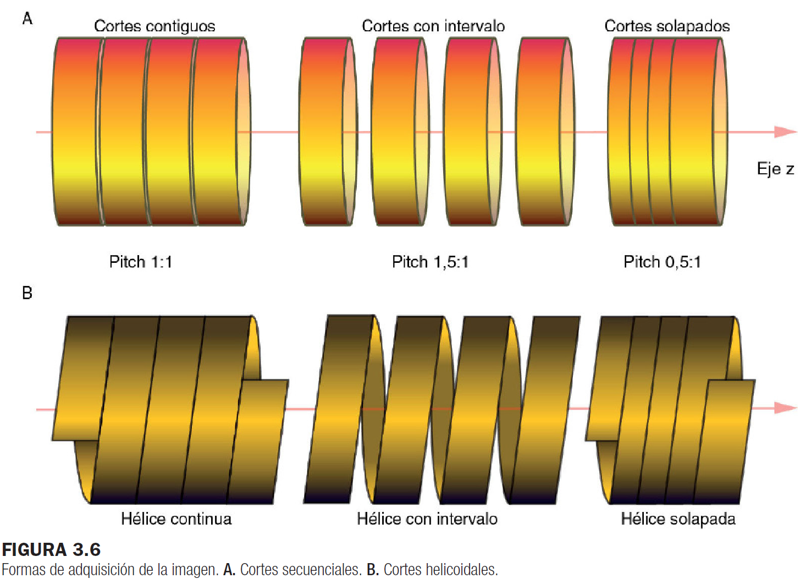
Factores
Factor de desplazamiento del corte(Pitch)
El factor de desplazamiento, o factor pitch,
define la relación entre el movimiento de la mesa
y la rotación del tubo de rayos X durante una
exploración, y tiene un efecto determinante en la
calidad de la imagen y en la dosis de radiación.
Con el desarrollo de la tecnología de los detectores
multicorte y la posibilidad de seleccionar
el número apropiado de éstos, el factor de desplazamiento
viene determinado además por otra
variable: el número de filas de detectores activas.
En los TC multicorte la colimación no es igual
al espesor de corte. Colimación es el volumen
de adquisición del estudio y el grosor de corte
es el volumen mínimo al que se pueden realizar
reconstrucciones de la imagen. La colimación,
o grosor del haz de rayos X, se determina
multiplicando el número de cortes por el espesor
de corte en cada giro.
Factor Pitch para TC Helicoidal
Factor Pitch para TC Helicoidal Multicorte
PITCH 1:1
Significa que la
mesa se mueve la misma distancia que el tamaño
del grosor de corte seleccionado. Las adquisiciones
formarán una hélice continua y no habrá
pérdida de información.
PITCH < 1
Cuando la distancia de desplazamiento de
la mesa es menor que el grosor de corte, existirá
un solapamiento en la adquisición, lo que
conlleva a una disminución del área de estudio
(FOV) y un aumento de la dosis de radiación al
paciente, pero una mejor resolución espacial.
significa que
en cada giro del tubo de rayos la mitad de los
datos adquiridos son también leídos en el giro
siguiente.
PITCH > 1
Cuando la distancia de desplazamiento de la
mesa es superior al grosor de corte, la hélice se
separa, creando una espiral de datos no adquiridos
contigua a la espiral de datos adquiridos.
El aumento de pitch por encima de 1:1 aumenta
el volumen de tejido a estudiar disminuyendo
la dosis de radiación. Posibilita el estudio de
grandes volúmenes del cuerpo en tiempo muy
reducido, aunque quedan zonas sin explorar,
disminuyendo por tanto la resolución espacial.
Factor de desplazamiento del haz
El factor de desplazamiento del haz relaciona el movimiento de la camilla del
paciente por cada revolución de 360º por la anchura del haz de RX.
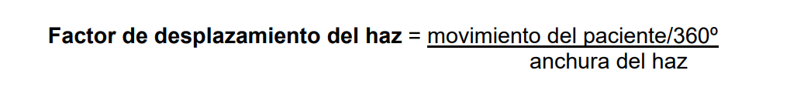
Tiempo de rotación y velocidad de adquisición de corte (SAR)
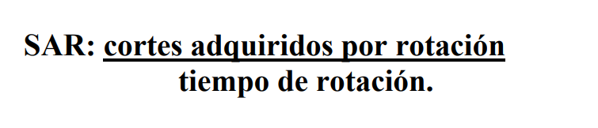
El tiempo de rotación es el tiempo que le lleva al tubo completar una rotación de 360º.
Hasta hace poco, este ha sido aproximadamente de un segundo para todos los
tomógrafos helicoidales de simple fila de detectores. Sin embargo con tomógrafos
multislice ha sido posible reducir los tiempos.
Por lo tanto, se considera un nuevo concepto, la velocidad de adquisición de corte
(SAR), siendo este el número de cortes que se adquieren por segundo.
el SAR refleja la fuerza de potencial de un TC multislice representando el
número de filas de detectores utilizados y a la velocidad a la que esta utilización ocurre.
El termino SAR se relaciona con la porción de datos volumétricos colectados durante un
scan espiral. A mayor SAR, mayor la velocidad potencial de espiralaje a través del
volumen de interés.
Es importante entender que este concepto, no se relaciona con el número de imágenes
que se pueden generar en un estudio, ya que este es dependiente de otros factores como
colimación, incremento de reconstrucción, pitch y fundamentalmente algoritmo de
interpolación.
Calidad de Imagen
Los principales factores que influyen en la calidad de imagen, ya sea en un tomógrafo
de simple fila de detectores o multislice, son la resolución espacial y la resolución de
densidad.
Homogeneidad de imagen (linealidad)
En TC se usan las unidades Hounsfield para representar
las diferentes densidades de los tejidos;
por ejemplo, el agua tiene un valor 0, el hueso, un
valor +1.000, y el aire, un valor −1.000.
Todos los píxeles que contengan agua deberían
tener una densidad con un valor 0, ya que representan
el mismo material; es decir, el valor de
los píxeles debe ser uniforme en toda la superficie
de la imagen reconstruida. Es lo que se denomina
homogeneidad de la imagen.
La falta de homogeneidad en la imagen indica
que el equipo de TC no funciona bien o que está
desalineado. Si la desviación es pequeña, los
valores numéricos de TC no serán precisos pero
el efecto sobre la imagen puede ser muy pequeño.
No obstante, esta pequeña desviación puede
afectar al análisis cuantitativo del tejido mediante
los valores de atenuación de los píxeles.
Es muy importante realizar calibraciones periódicas
para comprobar que el agua sigue siendo
representada por el cero y los restantes materiales
por sus números correspondientes de TC.
Se recomienda una calibración diaria mediante
la utilización de fantomas.
Resolución de bajo contraste
El contraste o resolución de bajo contraste es
la diferencia del tono de gris entre un punto y
otro de la imagen, un aspecto muy importante
en la calidad de la imagen. Permite visualizar y
diferenciar objetos o estructuras muy próximos de
muy bajo contraste con pequeñas diferencias en
su densidad, independientemente de su tamaño
y forma.
La resolución de contraste es la capacidad
de discriminación entre estructuras de distinta
densidad, sea cual sea su forma y tamaño. Un ejemplo es una lesión en un riñón rodeada de
tejido sano: para ver la lesión se tendrían que tener
diferentes densidades entre el objeto y el fondo,
por lo que la resolución de bajo contraste se refiere
a la sensibilidad del sistema para distinguir
diferentes densidades parecidas entre sí
En un equipo de TC una diferencia del 1%
en el coeficiente de atenuación lineal entre dos
estructuras corresponde a 10 UH de diferencia.
El coeficiente de atenuación de energía depende
de la energía del fotón, del número atómico
del tejido irradiado y de la densidad de la
estructura explorada. Todo ello le atribuye una
UH en cada píxel, con un valor numérico que es
fácilmente diferenciable del valor numérico aportado
por las estructuras de los tejidos vecinos. La
escala de grises por unidades independientes
de la TC permite al equipo distinguir mejor estructuras
que sean similares y de composición
parecida.
La resolución de bajo contraste está limitada
por el tamaño, la uniformidad del objeto
y el ruido del sistema.
Resolución espacial
La resolución espacial se define como la distancia
mínima entre dos puntos de un objeto para poder
ser identificados como dos estructuras diferentes,
es decir, la capacidad de discernir detalles entre
estructuras de pequeño tamaño. En la TC viene
determinada por el tamaño del vóxel, por lo que
si se reduce el grosor de corte y el tamaño del
campo de visión y se aumenta la matriz, aumentará
la resolución espacial.
Es importante una buena resolución espacial
cuando se estudian estructuras de tamaño milimétrico.
La resolución espacial es la capacidad
de diferenciar objetos de alto contraste
lo más pequeños y cercanos entre sí.
dos métodos: de forma directa (con un fantoma
de material acrílico, el cual tiene en su interior
unas tiras de metal separadas unos mm) o analizando
la propagación de la información dentro
del sistema. Este análisis de los datos se conoce
como función de transferencia de modulación.
Al cuantificar los datos se puede saber el rendimiento
de un equipo de TC o compararlo con
otro equipo.
Hay que tener en cuenta que la capacidad del
sistema para representar con precisión un objeto
varía según el tamaño del objeto.
La resolución espacial se ve afectada por la
calidad de los datos brutos (raw data) y el método
de reconstrucción. Los factores que afectan a
la calidad de los datos brutos son el tamaño de la
matriz, el campo de visión y el tamaño del píxel.
El tamaño de la matriz (la cantidad de píxeles
contenidos en ella) y del campo de visión
determinan el tamaño del píxel, que juega un
papel muy importante en la resolución de la
imagen. Además, el tamaño del campo de visión
determina la cantidad de datos brutos que serán
usados en la reconstrucción de la imagen: al aumentar
el tamaño del campo de visión también
aumenta el tamaño del píxel, por lo que se perderá
resolución.
En cada píxel hay información de las unidades
Hounsfield (diferentes densidades) de cada tejido
contenido en él, de tal manera que si hay un área
más pequeña que el píxel, su densidad será despreciada
por la de otro tejido de mayor tamaño,
dando lugar a una pérdida de información.
En general, todo lo que mejora la resolución
espacial empeora la resolución de contraste.
Ruido
Si se realiza un barrido de un medio perfectamente
homogéneo, como es un fantoma o un maniquí
de agua, el valor de cada uno de los píxeles de
esa imagen debería ser cero. Pero esto no ocurre,
porque la resolución de bajo contraste no es
perfecta debido a la variación de la intensidad
como consecuencia de la variación del número
de fotones que llegan al receptor. Por tanto, la
medida de todos los valores de los píxeles será cero,
pero algunos darán valores superiores y otros
inferiores a cero. Esta variación de los números
en torno al cero es el ruido del sistema. Si todos
los píxeles presentaran el mismo valor, el ruido
del sistema sería cero.
El ruido se define como la desviación estándar
porcentual de los píxeles obtenidos al realizar un
barrido de un recipiente de agua.
El ruido de la imagen está determinado por
los fotones de rayos X que llegan al detector y
que contribuyen en la generación de la imagen.
Es inversamente proporcional a la cantidad de
fotones que llegan al detector, es decir, cuanto
menor sea la cantidad de fotones que llegan al
detector, mayor será el ruido de la imagen.
El ruido del sistema depende de distintos
factores:
Tamaño del píxel
Grosor de corte
Eficacia de detectores
Tensión de pico y filtrado
Dosis que recibe el paciente
Si se hace una adquisición con una dosis muy pequeña
y grosor de corte fino, se aumenta el ruido
de la imagen. El ruido se puede evitar aumentando
la dosis del paciente, así como el grosor
de corte, aunque con ello se pierde resolución
espacial.
El ruido es proporcional a los mAs.
Resolución temporal
La resolución temporal es la velocidad a la que
se adquieren los datos. Está controlada por la
velocidad de rotación del gantry y se mide en
milisegundos (ms). Una buena resolución temporal
es vital para evitar la borrosidad de la imagen
provocada por el movimiento de órganos (por
ejemplo, corazón) y estudios angiográficos con
contraste yodado.
Parámetros modificables por el operador
Son aquellos que se seleccionan antes de hacerse el estudio, y no pueden ser alterados
luego de la adquisición de la imagen.
Ellos son:
Corriente del tubo (mA).
Voltaje del tubo (kV).
Colimación: grosor de corte adquirido (eje z).
Campo de visión.
Tiempo de exploración y cobertura.
Modo helicoidal o secuencial.
Factores de procesamiento
Son los parámetros responsables de procesar los datos crudos volumétricos,
recolectados durante el estudio, para la obtención de la imagen.
Ellos son: algoritmos de reconstrucción, matriz de imagen, incremento en corte de
reconstrucción.
Factores de tiempo
Son aquellos parámetros que se relacionan con la reconstrucción de la imagen y los
tiempos de procesamiento.
Ellos son: matriz de imagen, mejoras post-procesamiento, incremento en corte de
reconstrucción, colimación, área cubierta.
Artefactos
Se llama artefactos a toda imagen distorsionada y no deseada que afecta a la calidad de imagen.
Artefacto de los blancos por alteración de los detectores o error de estabilidad
Ocurren por una alteración en la calibración y balance de los detectores. Si estos no se encuentran intercalibrados o alineados, la proyección individual de cada anillo de datos es diferente, causando múltiples anillos concéntricos de intensidad variable (“rueda de carro”). También aparecen cuando el haz de rayos no está centrado sobre los detectores.
El mantenimiento y la calibración periódicos del equipo de TC evita su aparición.
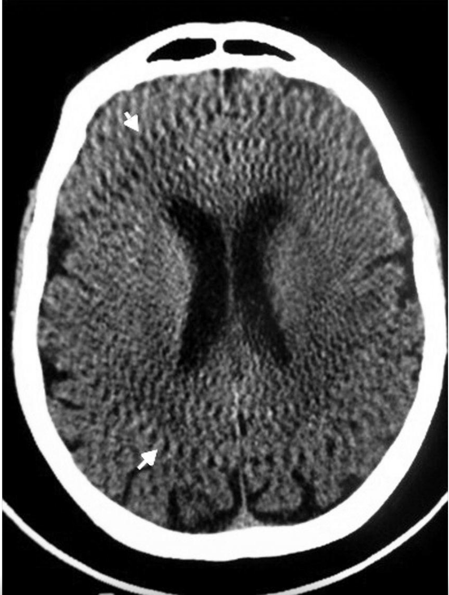
Movimientos del paciente
Se producen por movimientos del paciente (respiración, latidos cardíacos, temblor, excitación, nerviosismo, deglución, peristaltismo, etc.) y suelen aparecer en los escaneos donde es necesario mantener la respiración, especialmente en los estudios de tórax.
Se aprecian como bandas blancas y negras intercaladas, manchas o lunares negros, pérdida de la resolución, desdoblamiento de los contornos de las diferentes estructuras o distorsión de la anatomía.
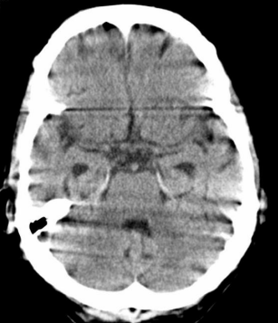
Factores ambientales
La humedad o temperatura ambiente, así como el exceso de partículas de polvo dentro del ordenador, causan errores en el algoritmo de reconstrucción. La colocación de un equipo de aire acondicionado y la higiene en la sala del tomógrafo y consola evitan la presencia de estas distorsiones.
Errores de espiral o “de remolino”
En los tomógrafos helicoidales la mesa de examen avanza continuamente, mientras el tubo de rayos rota alrededor del paciente. La fila de detectores pasa por el plano de interés, y la reconstrucción oscila entre las medidas de un solo detector y la interpolación de dos o más detectores. Si existe una gran diferencia de contraste entre estos, se crea una imagen distorsionada con forma de anillos concéntricos y espiculados, hipo e hiperdensos. Estos son más evidentes en los cortes finos.
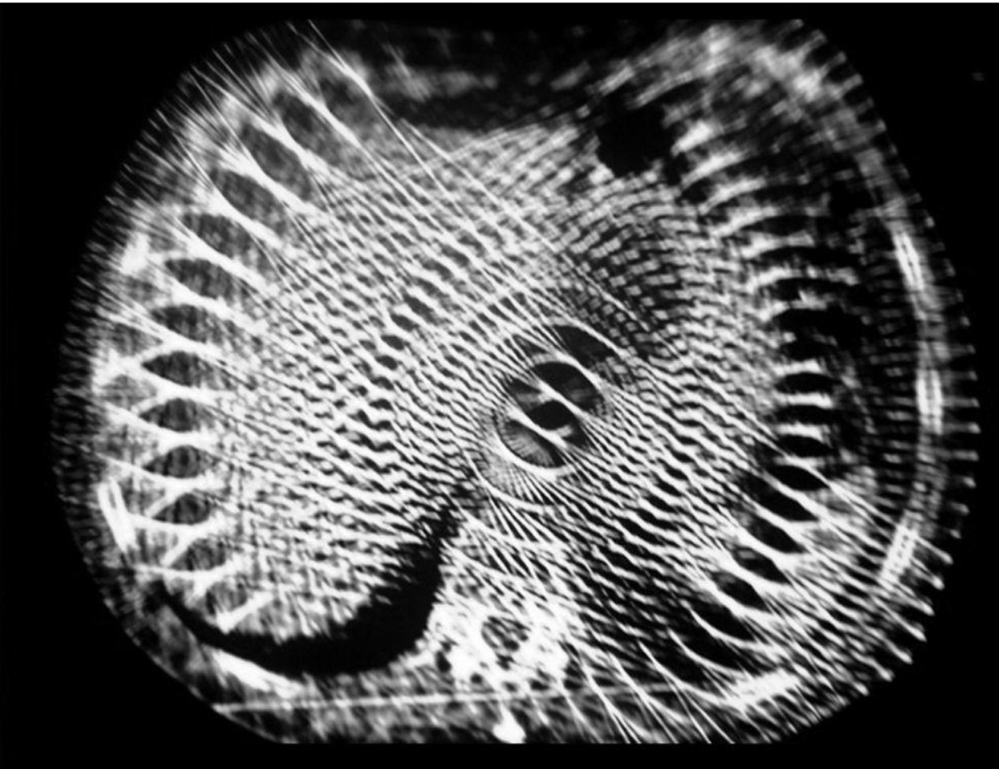
Presencia de cuerpos extraños/material médico
Se originan por elementos o instrumentos quirúrgicos compuestos por algún metal, como prótesis dentales, material de osteosíntesis, piercings, joyas, aparatos de vigilancia, cables, utensilios médicos, semillas de radioterapia, contrastes orales o endovenosos, y accesorios de ropa (botones, cierres, etc.). Aunque en menor medida, también puede generarse por el gas (p. ej. a nivel de la cámara gástrica).
Este artificio se reconoce porque el elemento de alta densidad genera un halo de falsa absorción en una o varias direcciones, como consecuencia de la variación abrupta de densidad. Aparece como bandas o “rayos de sol”, forzando a los detectores a operar en una región de respuesta no lineal, o como líneas de transición hipo e hiperdensas centradas en las imágenes metálicas presentes en el corte estudiado.
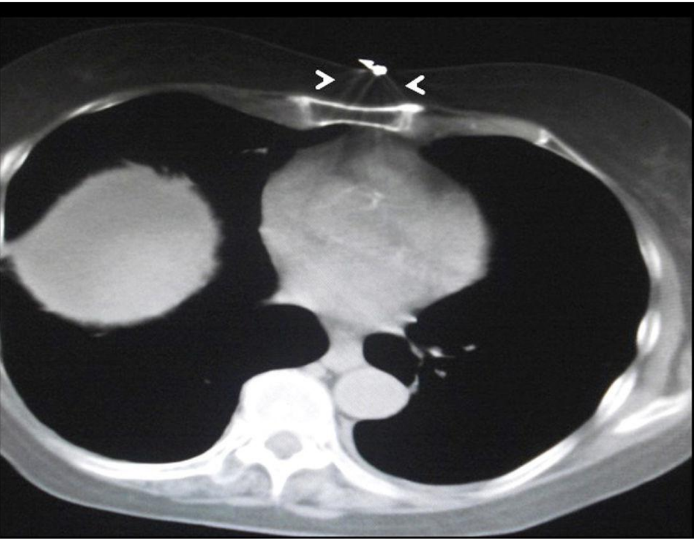
Ruido (quantum mottle)
Es una falla del cálculo estadístico que genera rayas y líneas espiculadas dispuestas al azar, preferentemente en la dirección de mayor atenuación . Al aumentar el ruido, los objetos con alta densidad (como el hueso) se manifiestan con bajo contraste, mientras que los tejidos blandos tienen una pobre visualización.
El ruido disminuye aumentando el miliamperaje o combinando la información de distintos escaneos, como el contraste de fases.
Artefacto por entrada de flujo
Se produce a nivel de las venas axilar o subclavia en las TC de tórax con contraste intravascular, como consecuencia del corto intervalo entre la administración del contraste endovenoso y el comienzo de la adquisición de los datos. La distorsión de la imagen, con aumento de la densidad, impide la correcta valoración de la anatomía axilar, por lo que, para que el artificio desaparezca, hay que retrasar unos segundos el inicio del escaneo.
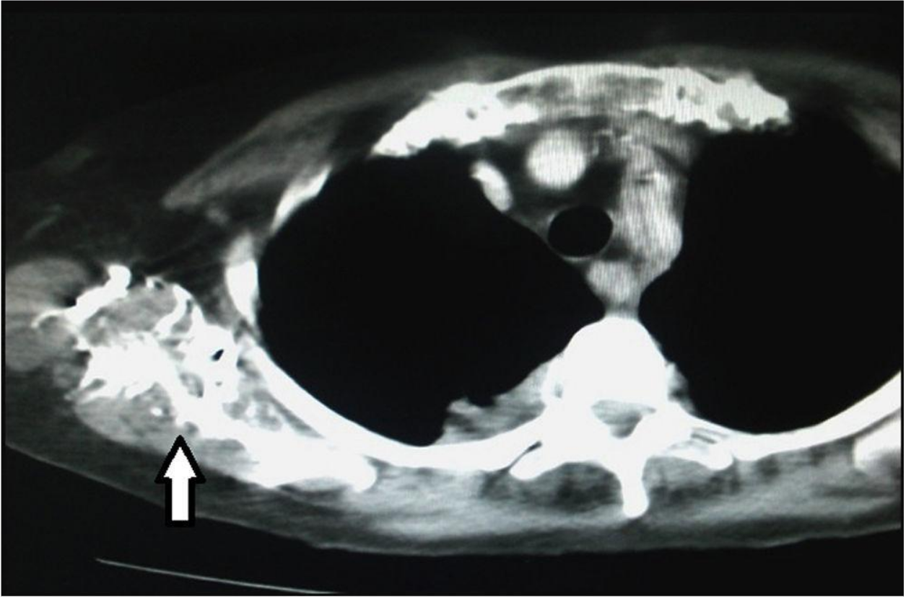
Proyección incompleta
Aparece cuando una parte del paciente se encuentra fuera del área de interés, pero igualmente es escaneada. La computadora, al no tener suficientes datos para reconstruir esa región, genera artificios o bandas espiculadas. Sucede, por ejemplo, cuando se estudia el tórax o abdomen superior y el paciente no puede elevar los brazos. También puede constatarse cuando el haz de rayos atraviesa un objeto metálico.
Artificio de desborde de campo o salida de campo
Se objetivan zonas o áreas hiperdensas en el borde o límite de la imagen. Estos artefactos se visualizan cuando la región a estudiar o el cuerpo del paciente salen o exceden el campo de medida.
Se evitan adaptando el campo de medida al volumen corporal del paciente. En casos de obesidad puede ser difícil, pero en los nuevos equipos multicorte existen soluciones informáticas (algoritmos de reconstrucción) para solucionarlo.
Efecto del haz cónico
Con el incremento de los números de cortes por rotación se requiere una mayor colimación, y el haz de rayos pasa de una configuración cónica a una en abanico (se expande), produciendo un artefacto similar al volumen parcial.
Se origina en los equipos multicorte debido a la elevada conicidad del haz de rayos (multilíneas) y a la utilización de un paso de hélice elevado. A mayor número de detectores, mayor será el artificio.
Artefacto escalonado
Se produce en las imágenes multiplanares o 3D reformateadas, manifestándose en los bordes de la estructura estudiada como líneas superpuestas, semejantes a los peldaños de una escalera.
Aparece en las imágenes que necesitan una gran colimación y una reconstrucción no solapada, y se puede eliminar virtualmente con cortes finos reformateados.
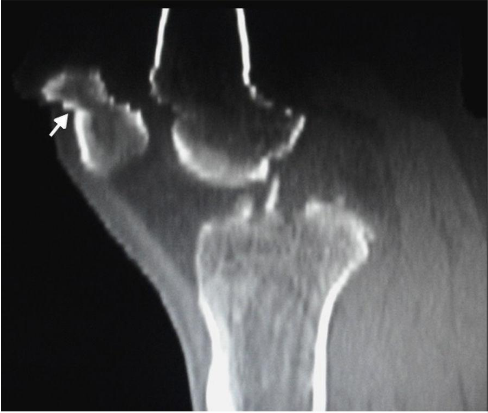
Artefacto en “cebra”
Se observa como tenues rayas escalonadas en reconstrucciones multiplanares y 3D en el plano sagital o coronal. Se genera por un excesivo grosor del corte, que origina una inhomogeneidad a lo largo del eje Z. Para reducirlo, se emplean algoritmos informáticos.
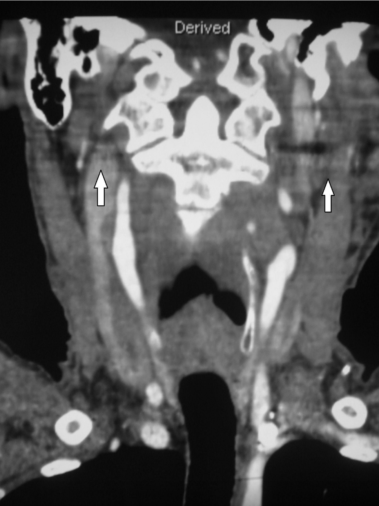
Artefactos en banda o anillos
son causados por una ineficiente calibración de los
detectores, movimientos del paciente, presencia de objetos metálicos o radiodensos,
mientras que un error en la alineación del tubo-detector dará una borrosidad de bordes
en la imagen.
Penumbra geométrica, geometría de los rayos X por descuido o falta de linealidad
Una inadecuada alineación de los rayos X (Rx) del tubo con los detectores puede generar una imagen borrosa con resolución espacial limitada. Se manifiesta como una penumbra relacionada con la medida del foco, ya que a menor tamaño, se obtiene menor penumbra geométrica.
Un correcto y periódico mantenimiento y calibración del tomógrafo o una colimación secundaria eficaz reducen el efecto.
Error parcial de volumen
Cuando los tejidos de diferente absorción ocupan el mismo voxel, la intensidad del píxel corresponde al promedio de las densidades de las estructuras del voxel. Este error se produce cuando el haz de rayos atraviesa estructuras heterogéneas y de alta densidad, dispuestas de forma paralela al eje de giro del sistema.
Suele presentarse en la base del cráneo a nivel de los peñascos y en la protuberancia occipital interna.
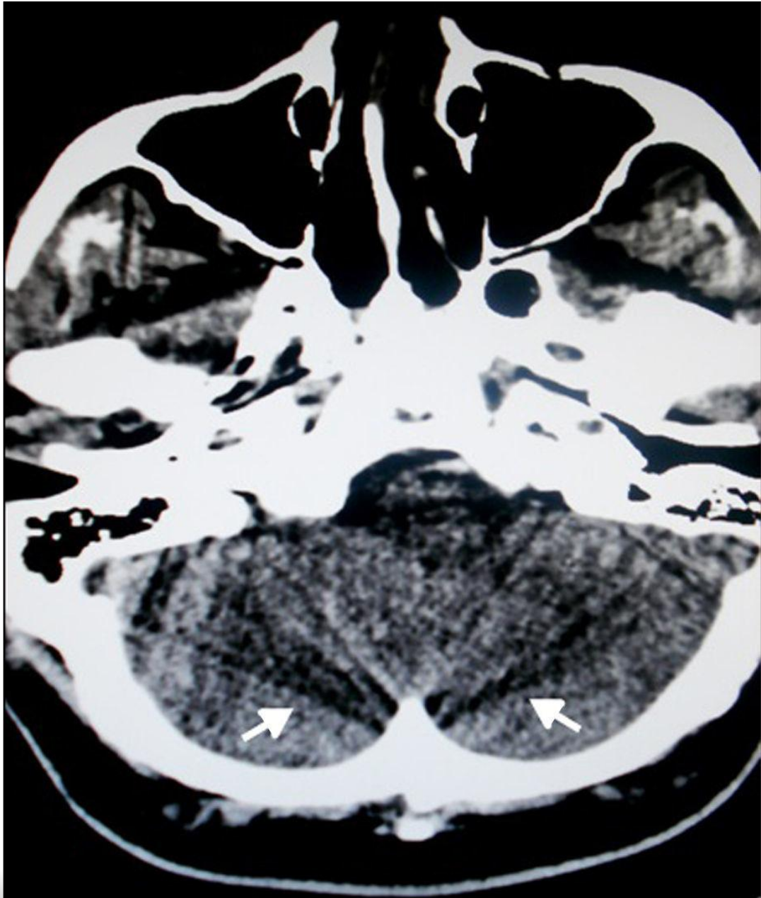
Endurecimiento del haz (del ingles beam hardening)
Se genera por la absorción preferencial de los fotones de baja energía del rayo en los tejidos. Este efecto es más pronunciado en áreas de gran atenuación (como el hueso) y sucede cuando, al atravesar el haz de rayos, las estructuras encuentran transiciones muy marcadas de espesor y densidad5.
En este caso, se aprecian líneas o bandas espiculadas e intercaladas, claras y oscuras, como una sombra debajo de las costillas o como un aumento de sombras espiculadas en el mediastino, la cintura escapular o la base del cráneo.
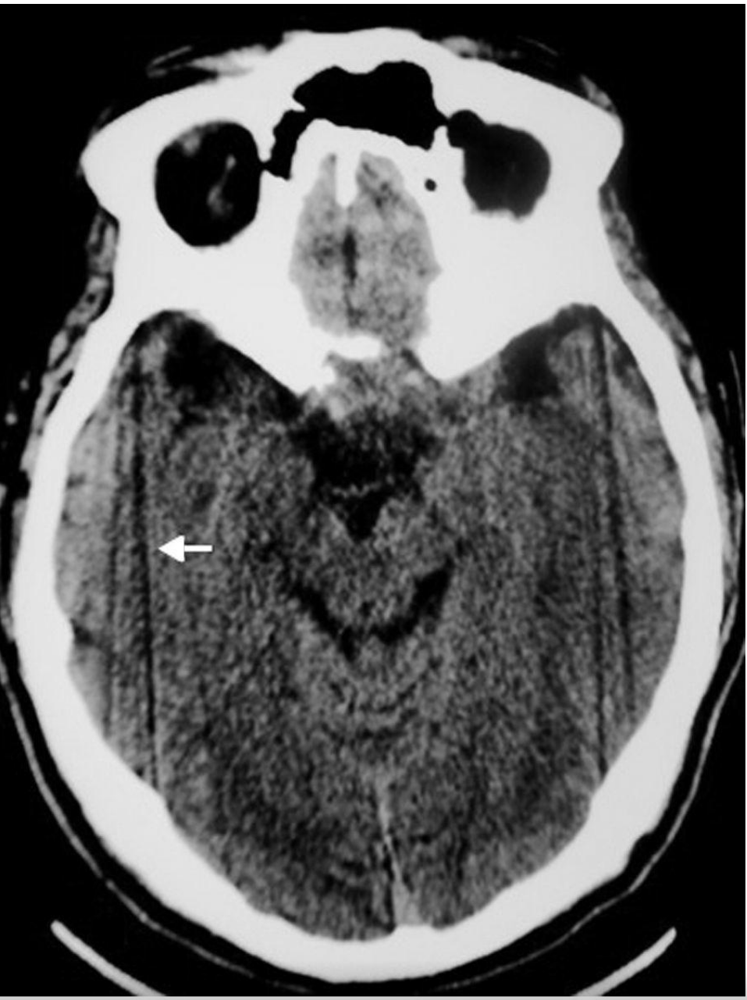
Reconstrucción de la imagen
Reconstrucción multiplanar
La reconstrucción multiplanar (MPR, multiplanar
reconstruction) no es una reconstrucción 3D, sino
una deformación geométrica del volumen de datos.
Por su facilidad de utilización, rapidez de
implementación y cantidad de información suministrada,
se encuentra entre las de mayor uso
en la práctica diaria.
Las MPR son imágenes 2D reconstruidas en
un plano arbitrario, generalmente axial, coronal
y sagital, a partir de los datos brutos de
la adquisición o de una hélice axial de grosor e incremento
suficientemente pequeño.
Permite moverse dentro de estos planos hasta
obtener la posición deseada para proceder a
realizar las reconstrucciones más complejas.
La MPR muestra un plano dentro de los datos
del volumen en 3D y presenta los datos en ese
plano como una imagen.
Reconstrucción de máxima intensidad de proyección
La reconstrucción de máxima intensidad (MIP,
máximum intensity projection) es una técnica de representación
que crea una imagen bidimensional
a partir de la información tridimensional incluida
en un volumen determinado. Partiendo de una
línea de visión, similar a una proyección radiológica,
se representan en una imagen bidimensional
los vóxeles más contrastados que conforman el
volumen seleccionado. De esta forma, en la imagen
final quedan representadas las estructuras
del volumen estudiado que mayor atenuación
han presentado.
Sólo se muestran en la imagen los píxeles
de mayor intensidad en el grosor reconstruido
Es un método para presentación 3D a lo largo
de la dirección de visualización, a través de un
volumen. En la imagen, los resultados dependerán
del vóxel con la absorción más alta de cada
área.
La MIP trata el objeto como si fuese traslúcido,
muestra los píxeles de máxima intensidad de
cada corte, de tal modo que es la reconstrucción
requerida para estructuras de máxima densidad/
intensidad, y no muestra la profundidad de las
estructuras, de tal manera que las estructuras
vasculares anteriores ocultan las posteriores
En la reconstrucción se resaltan los vóxeles de
máxima intensidad (por lo general contraste y
calcio) en escala de grises.
La principal desventaja de la MIP proviene
del calcio en los vasos que pasan cerca de
estructuras óseas o de las placas ateromatosas
calcificadas, donde se artefacta la exploración.
Reconstrucción de mínima intensidad de proyección
Si la MPR realiza un promedio en toda la captura,
la mínima intensidad de proyección (MiniMIP)
busca en la adquisición las estructuras menos
densas, como por ejemplo el aire. En MiniMIP
solamente se utilizan y se muestran los valores de
atenuación menores, y sólo se muestran
en la imagen los píxeles de menor intensidad
en el grosor reconstruido.
La imagen obtenida es un negativo de la MIP
y realza estructuras de baja densidad, mostrando
por ejemplo las características del atrapamiento
aéreo, enfisema o cualquier cavidad con aire,
como los pulmones o los senos paranasales.
Es la base de la broncoscopia y la colonoscopia
virtuales.
Reconstrucción volumétrica
La reconstrucción volumétrica (VR, volumen rendering)
es una representación 3D del estudio que
tiene en cuenta todos los vóxeles de la imagen.
Según sus valores de atenuación, se asignan distintos
grados de transparencia, brillo y color a
los distintos vóxeles que conforman la región
estudiada.
Existen múltiples tipos de VR, orientados a
regiones o estructuras determinadas. Para diferenciar
entre las distintas estructuras, se asignan
colores diferentes en función de la densidad. El
resto de tejidos que conforman el volumen, menos
densos, se hacen transparentes, con lo que no
contribuyen a la imagen.
La VR es la reconstrucción 3D que da mayor
cantidad y calidad de información, y por lo
tanto, la más utilizada en la práctica diaria,
sobre todo a la hora de representar estructuras
vasculares.
La imagen se puede rotar para visualizarla desde
distintos puntos del espacio. También se pueden
controlar los grados de transparencia, color y
brillo de la imagen final, así como la dirección
de la fuente de iluminación.
La VR contiene toda la información de un
vóxel, lo que le da ventaja frente a la MIP y a
las reconstrucciones de superficie sombreada.
Funciona por porcentajes de tejido en el vóxel,
asignando a cada tejido un color y transparencia.
La opacidad de cada vóxel define su grado de
visibilidad:
Opacidad 0: vóxeles totalmente transparentes,
que no se verán en la imagen.
Opacidad 1: vóxeles totalmente opacos, que
no dejan pasar la luz.
Opacidad intermedia: vóxeles con valores
semitransparentes.
Reconstrucción de superficie sombreada
La reconstrucción de superficie sombreada (SSD,
shaded surface display) fue la primera técnica de
reconstrucción 3D utilizada. Este método muestra
la superficie de un órgano o de un hueso que ha
sido definida en unidades Hounsfield (UH) por
encima de un determinado valor de umbral. El
ángulo de visión y la localización de la hipotética
fuente de luz virtual son cruciales para obtener
reconstrucciones óptimas.
Es una técnica rápida de reconstrucción pero
en realidad su utilidad se limita a la visualización
de hueso, que se encuentra en el extremo superior
de las curvas de atenuación, y en la práctica no
sirve para visualizar tejidos blandos, pues al bajar
el umbral para incluir estos tejidos se presentan
muchos artefactos y el hueso y los tejidos blandos
se muestran como un mismo tejido
Por ello, la elección del valor del umbral debe
ser cuidadosa, ya que de lo contrario se puede
eliminar información valiosa de la imagen, e incluso
puede parecer que hay una patología allí
donde no la hay.
La SSD muestra poca profundidad, y no se
observan las estructuras en el interior o por detrás
de la superficie.
La principal desventaja de la SSD es que al
hacerse una media con la señal de los vóxeles,
si no se trata de un tejido muy homogéneo
(hueso), da lugar a importantes artefactos.